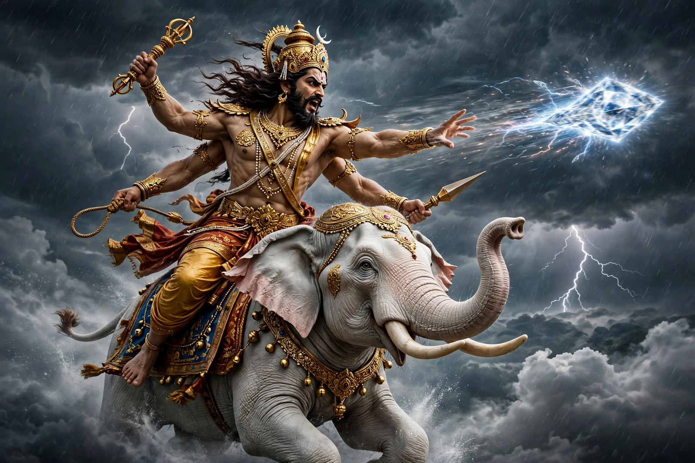

From Wikipedia, the free encyclopedia
| Indra | |
|---|---|
| Affiliation | Hinduism; king of the devas, god of thunder, storms and war |
| Mount | Elephant Airavata |
| Weapon | Vajra (thunderbolt) |
| Consort | Shachi (Indrani) |
| Realm | Svarga (heaven), on Mount Meru |
| Best-known myth | Slaying the serpent Vritra and releasing the waters |

Indra is the king of the gods (devas) in Hinduism, god of thunder, storms, rain and war, and the most celebrated deity of the ancient Rigveda, where roughly a quarter of the hymns praise him. Riding the white elephant Airavata and wielding the vajra, the thunderbolt fashioned from the bones of the sage Dadhichi, he won his throne by slaying the serpent Vritra, who had penned up the waters of the world. In later Hinduism his power and dignity waned — the Puranas delight in his jealousies and humiliations — but he remains the archetypal storm-king, guardian of the east, and the god every king of heaven must beware of losing his seat.
Indra's defining deed, told in the Rigveda and retold for three thousand years: the serpent Vritra ("the Obstructor") coiled upon the mountains and withheld the cosmic waters, bringing drought and chaos. Fortified with soma, Indra fought him — the hymns revel in the duel: heaven and earth trembled — and split the serpent's head with the vajra, releasing the rivers to flow to the sea like lowing cattle, and letting the sun rise. The myth is read as a storm and creation myth, and it fixed Indra's identity as the dragon-slaying champion of order against obstruction.
The epics and Puranas demote him: Krishna lifts Mount Govardhan to humble Indra's storm and stop his worship; sages curse him; demons and even virtuous mortals repeatedly threaten his throne, and he schemes — sending apsaras to break the meditation of ascetics whose accumulated power endangers him. Buddhism adopted him as Śakra, a devout protector of the Buddha who descends to ask him questions, and Jainism likewise honours him; in both he is powerful but emphatically mortal and subordinate — a measure of how completely the later religions reordered the Vedic pantheon.
Hinduism · Hindu mythology · Shiva · Vishnu · Krishna · Parvati